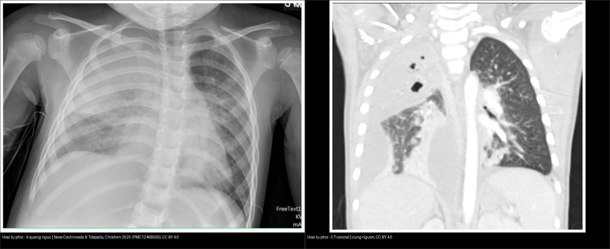
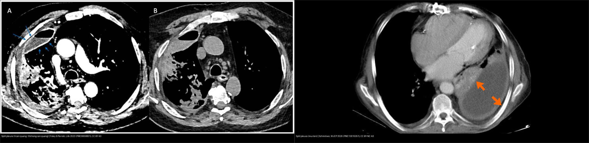
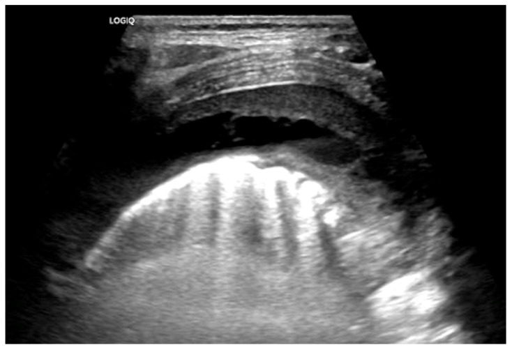
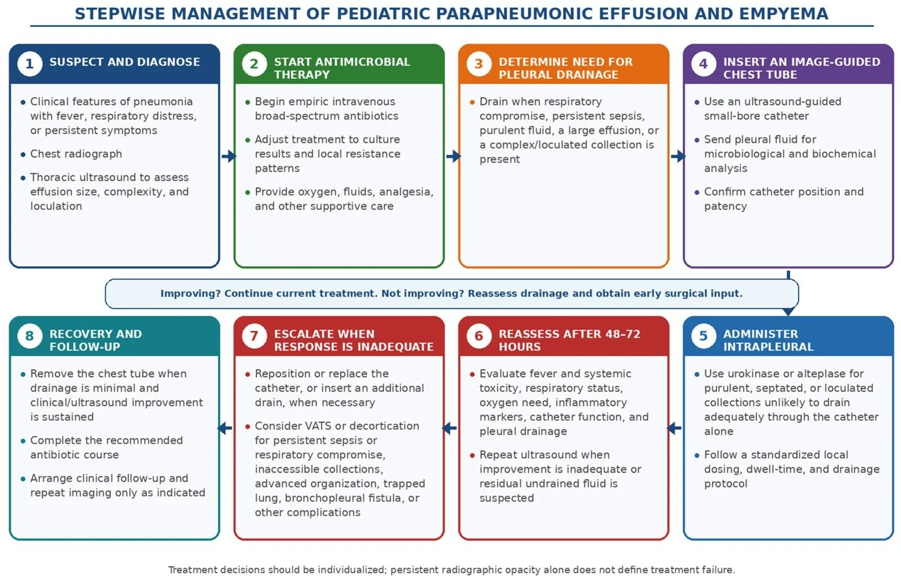
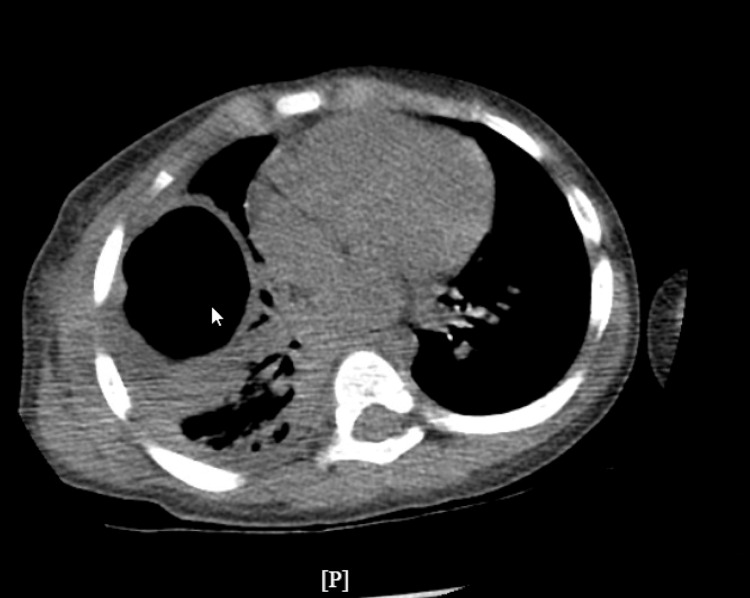
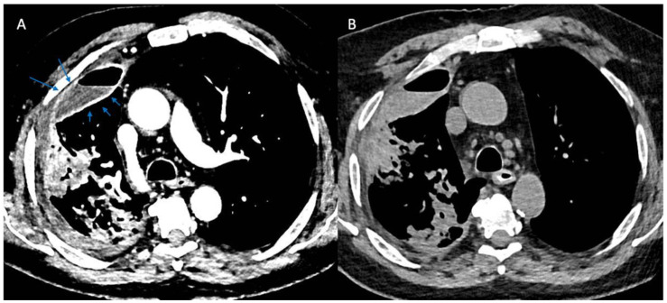
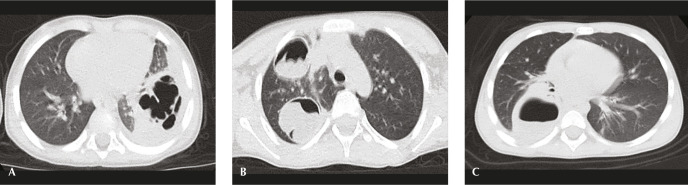
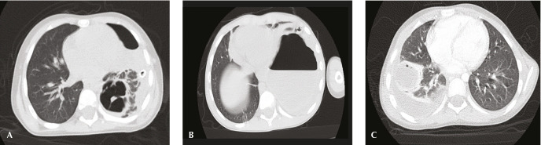
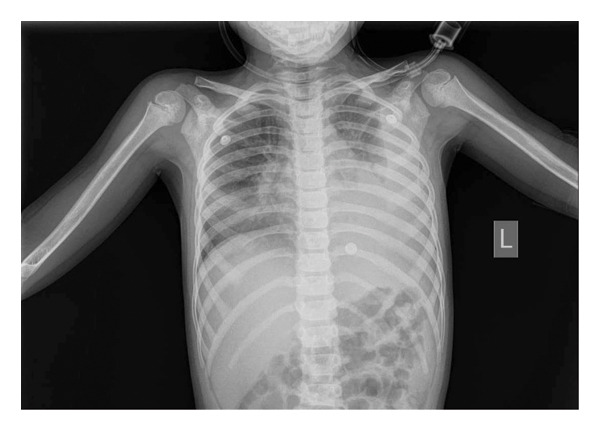
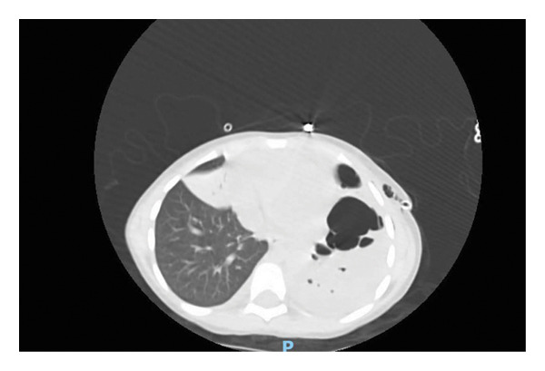

616 — Biến chứng viêm phổi nhi: viêm mủ màng phổi (empyema) & hoại tử phổi / Pediatric pneumonia complications: empyema & necrotizing pneumonia
Tags: pattern:hoai-tu-phoi pattern:viem-mu-mang-phoi pattern:split-pleura vung:phoi vung:mang-phoi score:Light-criteria protocol:CT-nguc-can-quang protocol:sieu-am-phoi
Mức chắc chắn (certainty): tổng hợp y văn (literature synthesis) — tự biên từ 6 nguồn mở (Ness-Cochinwala & Totapally 2025 CC BY; Foley & Parrish 2023 CC BY; Esposito 2026 CC BY; Schmiliver 2026 CC BY-NC; Hafez Eftekhari 2026 CC BY-NC; Abu-Hijleh 2026 CC BY) + 1 ca nguyên văn gắn ảnh (Gujar 2025 CC BY).
1. Tổng quan — TẠI SAO viêm phổi nhi "đi xa" thành mủ màng phổi & hoại tử nhu mô?
- Phổ bệnh (spectrum): một viêm phổi cộng đồng ở trẻ có thể tiến triển theo một dải liên tục — tràn dịch cạnh viêm phổi (parapneumonic effusion — PPE) → viêm mủ màng phổi (empyema) → hoại tử phổi (necrotizing pneumonia — NP) → áp-xe phổi (lung abscess) → hoại tử thùy lan rộng (pulmonary gangrene). Tên gọi khác nhau theo vị trí tổn thương (khoang màng phổi hay nhu mô phổi) và mức độ hoại tử, chứ không phải các bệnh tách rời.
- Định nghĩa mủ: empyema = mủ trong khoang màng phổi (dịch đặc trắng–vàng, quánh, do protein đông, mảnh tế bào và fibrin) hoặc dịch màng phổi có Gram stain/cấy dương tính (Foley 2023). NP = hóa lỏng (liquefaction) và tạo hang (cavitation) nhu mô phổi; pulmonary gangrene = ≥ 50% một thùy đã hoại tử chết (Ness-Cochinwala 2025).
- TẠI SAO hình ảnh trông như vậy (cơ chế):
- Nhu mô hoại tử/hóa lỏng trên CT = vùng giảm mật độ (hypoattenuation), không ngấm thuốc, mất mạch máu (loss of vascularity) vì vi huyết khối + độc tố vi khuẩn phá hủy mao mạch phổi → vùng hoại tử chứa dịch/hoại tử (mật độ nước ~0–20 HU) nằm trong đông đặc (30–60 HU) nên nổi bật thành các ổ sáng hơn trong vùng đặc (chênh mật độ). Pneumatocele (nang khí) hình thành do van một chiều — khí vào được, không ra → các túi khí thành mỏng, mô phổi xung quanh còn sức căng.
- Split pleura sign (dấu tách màng phổi): quá trình viêm màng phổi gây tăng sinh mao mạch và nguyên bào sợi (fibroblast) cả màng phổi tạng và thành → hai lá màng phổi dày, ngấm thuốc rõ, bị đẩy tách nhau bởi dịch mủ ở giữa. Vì dấu hiệu dựa vào ngấm thuốc, nó chỉ hiện trên thì cản quang màng phổi (Foley 2023).
- Siêu âm phổi (lung ultrasound — LUS): dịch đơn thuần = trống âm (anechoic), đồng nhất; dịch phức tạp = tăng hồi âm (echogenic) + vách fibrin + khu trú (septations/loculations) — fibrin là thứ hồi âm mạnh.
- Ngưỡng định lượng (bắt buộc):
- NP chiếm tới ~40% các viêm phổi có biến chứng ở trẻ; một loạt ở Ai Cập: 54% trẻ nhập viện vì CAP được chẩn đoán NP và 64% ca NP có kèm empyema (Ness-Cochinwala 2025).
- Cấy máu chỉ dương tính < 10%; nuôi cấy thường quy chỉ cho chẩn đoán vi sinh ở 30–50% ca; ở ca empyema cấy âm, PCR 16S rRNA dương thêm 31% (Ness-Cochinwala 2025).
- Giai đoạn theo ATS (American Thoracic Society): xuất tiết (exudative) 24–72 giờ đầu (dịch vô khuẩn, tự do, glucose bình thường, pH bình thường/giảm nhẹ) → mủ–fibin (fibrinopurulent): glucose < 60 mg/dL, pH < 7,20, LDH > 3× giới hạn trên bình thường, có vách/khu trú → tổ chức hóa (organizing): tăng sinh nguyên bào sợi, tạo "vỏ màng phổi" (pleural peel) bó phổi (Esposito 2026).
- Ngưỡng chỉ định dẫn lưu màng phổi (dịch phải dẫn lưu khi ≥ 1 tiêu chuẩn): pH < 7,20 · glucose < 40 mg/dL · LDH > 1000 IU/L · Gram stain/cấy dương tính (Foley 2023).
- Tiêu chuẩn Light (dịch tiết – exudate): tỷ lệ protein dịch/huyết tương > 0,5 (Se 86%/Sp 84%), tỷ lệ LDH dịch/huyết tương > 0,6 (Se 90%/Sp 82%), LDH dịch > ⅔ giới hạn trên LDH huyết thanh (Se 82%/Sp 89%); chỉ cần 1/3 tiêu chuẩn (Se 98%/Sp 83%) (Foley 2023).
- Split pleura + độ dày dịch toàn bộ > 30 mm: Se 79,4% / Sp 80,9% phân biệt empyema–PPE có biến chứng với PPE không biến chứng (Foley 2023).
- Dự báo cần mổ (multivariate): đau ngực kiểu màng phổi + bạch cầu > 13.500/uL + khu trú (loculations) + split pleura sign trên CT cản quang (Foley 2023).
- Cân nhắc cắt thùy (lobectomy): NP với hoại tử phổi lớn/các hang chiếm > 50% thùy bị ảnh hưởng → diễn tiến kéo dài và nhiều biến chứng sau mổ hơn; cắt thùy có thể rút ngắn hồi phục ở nhóm này (Ness-Cochinwala 2025).
2. Mẫu hình + chẩn đoán phân biệt theo vị trí (Gamut)
- Mẫu hình A — "ổ sáng/hang nằm trong vùng đông đặc" ở trẻ: gamut theo cơ chế:
- Nhiễm trùng – hoại tử: hoại tử phổi (cavitary necrosis — S. pneumoniae, S. aureus/PVL-MRSA, S. pyogenes, Mycoplasma), áp-xe phổi (đơn độc, thành rõ), nang khí (pneumatocele — hậu nhiễm tụ cầu/PVL, thường tự lành), hang lao.
- Ký sinh trùng: nang sán lá phổi (hydatid cyst) — dấu "hoa súng" (water-lily sign) / màng nổi, hay gặp ở vùng dịch tễ.
- Bẩm sinh bội nhiễm: CPAM (dị dạng đường thở phổi bẩm sinh) bội nhiễm.
- Khác: nhồi máu phổi/hang sau chấn thương.
- Mẫu hình B — "tràn dịch màng phổi cạnh viêm phổi" (đơn độc hay kết hợp A):
- Nhiễm trùng: PPE đơn thuần → PPE có biến chứng → empyema → áp-xe phổi giả tràn dịch (bẫy kinh điển).
- Không nhiễm trùng: tràn dịch do viêm tụy, bệnh mô liên kết, ung thư/di căn màng phổi, phù (transudate).
- Câu hỏi phân loại nhanh (4 câu rẻ nhất): (1) dịch tự do (free-flowing) hay khu trú (loculated)? (2) có split pleura sign không? (3) thành hang dày bao nhiêu, bờ đều hay lệch tâm? (4) khí trong hang kiểu gì — thông khí hoàn toàn (hoại tử) / mức khí–dịch (sán) / bọt khí (áp-xe)?
- Gợi nhớ: "PPE → MỦ → HOẠI TỬ" là một dải bệnh của cùng một ổ viêm, cộng với 3 kẻ bắt chước màng phổi: áp-xe, sán, lao.
3. Bảng so sánh phân biệt (ma trận đối chiếu)
| Thực thể (entity) | Hình ảnh điển hình | Chốt vào (rule-in) | Chốt loại (rule-out) | Gợi ý xác nhận |
|---|---|---|---|---|
| Hoại tử phổi (necrotizing pneumonia) | Đông đặc chứa vùng giảm mật độ không ngấm thuốc + mất mạch máu, có hang/pneumatocele; trên X-quang đông đặc có ổ sáng bên trong | Vùng giảm mật độ trong đông đặc + mất mạch máu + nang khí, sốt/CRP cao, không cải thiện | Split pleura đơn độc không có tổn thương nhu mô → nghĩ empyema | CT cản quang; theo dõi X-quang; > 50% thùy → cân nhắc cắt thùy |
| Áp-xe phổi (lung abscess) | Hang đơn độc, thành rõ, bờ đều/tròn, thường có mức khí–dịch; góc nhọn với thành ngực | Hang thành đều + bọt khí/mức dịch + không split pleura | Split pleura + dịch thấu kính → empyema | CT; dẫn lưu/kéo dài kháng sinh |
| Viêm mủ màng phổi (empyema / complicated PPE) | Dịch thấu kính (lenticular), góc tù với thành ngực, ép phổi; split pleura sign (2 lá màng phổi dày ngấm thuốc) | Split pleura + dịch khu trú + (pH < 7,20 · glucose < 40 · LDH > 1000 · cấy +) | Dịch trống âm tự do, không vách, không ngấm màng phổi → PPE đơn thuần | CT cản quang thì màng phổi; LUS; xét nghiệm dịch |
| Tràn dịch đơn thuần (simple PPE) | Dịch tự do, đồng nhất, trống âm trên LUS, di động theo tư thế; không vách | Dịch trống âm + không khu trú + màng phổi không dày | Vách/hồi âm/split pleura → đi theo empyema | LUS lặp lại; theo dõi dưới kháng sinh |
| Nang sán phổi (hydatid cyst) | Nang thành dày nhất (~5,6 mm), mức khí–dịch, dấu hoa súng/màng nổi | Màng nổi + mức khí–dịch + dịch tễ vùng nang sán | Thành mỏng + bọt khí 1 ổ → áp-xe | CT ± MRI; huyết thanh chẩn đoán |
| Nang khí (pneumatocele) | Túi khí thành rất mỏng, nhiều ổ, trong/ven vùng đông đặc đang hồi phục | Thành mỏng như tờ giấy + nhiều ổ + sau viêm tụ cầu/PVL | Thành dày bờ không đều → nghĩ hoại tử/áp-xe | Theo dõi X-quang — thường tự thoái triển |

Trái: X-quang ngực — đông đặc thùy trên phải. Phải: CT coronal cửa sổ phổi cùng ca — đông đặc có ổ giảm mật độ + hang + pneumatocele và tràn dịch màng phổi phức tạp. Nguồn: Ness-Cochinwala & Totapally, Children (Basel) 2025 (PMC12468505), CC BY 4.0. Ảnh ghép letterbox.
Trái: CT cản quang (A) + không cản quang (B) — dấu split pleura chỉ hiện rõ trên thì cản quang (Foley & Parrish, Life 2023, PMC9959801, CC BY 4.0). Phải: CT ở trẻ — màng phổi tạng/thành dày ngấm thuốc (mũi tên), tách nhau bởi dịch mủ (Schmiliver, World J Clin Pediatr 2026, PMC13010351, CC BY-NC 4.0). Ảnh ghép letterbox.
Siêu âm phổi (LUS): tràn dịch cạnh viêm phổi phức tạp — dịch tăng hồi âm, có vách fibrin và khu trú (khác dịch đơn thuần trống âm, tự do). Nguồn: Ness-Cochinwala & Totapally, Children (Basel) 2025 (PMC12468505), Fig. 6, CC BY 4.0.Ba dấu hiệu "lè lưỡi" chia đôi gamut
- Split pleura sign: màng phổi tạng và thành dày ngấm thuốc, tách bởi dịch → empyema/PPE có biến chứng (gặp 98,7% trên CT cản quang thì màng phổi ở BN nhiễm trùng màng phổi; 68% trong báo cáo ban đầu) — (Foley 2023).
- Hình học áp-xe vs empyema: áp-xe hình cầu, góc nhọn với thành ngực, không split pleura; empyema hình thấu kính, góc tù, split pleura (cùng mật độ dịch — hình học mới quyết định tên).
- Kiểu khí trong hang (Hafez Eftekhari 2026, n=53, CC BY-NC): hoại tử phổi = hang thông khí hoàn toàn; sán = mức khí–dịch; áp-xe = bọt khí (air-bubble).
4. Protocol chụp + hệ phân độ/điểm chuẩn hóa
- Thứ tự hình ảnh (ALARA): X-quang ngực thẳng (+ nghiêng) đầu tay → siêu âm phổi (LUS) để đo lượng dịch, đánh giá khu trú/vách (không tia xạ, lặp lại được) → CT ngực cản quang khi nghi hoại tử phổi, khu trú phức tạp, không cải thiện sau dẫn lưu hoặc cần loại trừ nguyên nhân khác (Ness-Cochinwala 2025).
- CT ngực — điểm mấu chốt: chụp cản quang (dấu split pleura phụ thuộc ngấm thuốc) và đọc cửa sổ phổi để thấy ổ giảm mật độ/hang/pneumatocele; ghi rõ số lượng, kích thước, thành bao nhiêu mm, có mức khí–dịch, có chia > 50% thùy không.
- Phân tích dịch màng phổi (khi chọc hút được): áp dụng tiêu chuẩn Light (bảng trên) để xác định dịch tiết; dẫn lưu khi pH < 7,20 · glucose < 40 mg/dL · LDH > 1000 IU/L · Gram/cấy dương tính (Foley 2023).
- Ba giai đoạn ATS + giá trị của thuốc tiêu sợi huyết (fibrinolysis): hiệu quả cao nhất ở giai đoạn mủ–fibrin (7–14 ngày); giai đoạn tổ chức hóa (> 14–21 ngày) đáp ứng kém, thường cần VATS/decortication (Esposito 2026).
- Urokinase là thuốc có bằng chứng RCT nhi khoa chất lượng cao nhất; alteplase tốt trong nghiên cứu quan sát/so sánh với VATS; kết cục fibrinolysis ≈ primary VATS ở trẻ chọn lọc, nhưng fibrinolysis rẻ hơn và tránh mổ ở phần lớn bệnh nhân (Esposito 2026).
- Người lớn (MIST2): alteplase + DNase cải thiện làm sạch màng phổi, giảm chuyển mổ, rút ngắn nằm viện — đơn trị không bằng phối hợp; mức lợi này chưa chứng minh tương tự ở trẻ (Esposito 2026).
- Tiêu chuẩn hóa: dùng phác đồ urokinase/alteplase chuẩn hóa tại chỗ (liều, thời gian lưu) (Esposito 2026).

Sơ đồ 8 bước: nghi ngờ/chẩn đoán → kháng sinh tĩnh mạch phổ rộng → quyết định cần dẫn lưu → đặt catheter dưới hướng dẫn siêu âm → thuốc tiêu sợi huyết trong màng phổi → đánh giá lại sau 48–72 giờ → nâng bậc (đổi thêm dẫn lưu/VATS) khi đáp ứng kém → hồi phục & theo dõi. Nguồn: Esposito et al., Pharmaceuticals (Basel) 2026 (PMC13516778), CC BY 4.0.flowchart TD
A[Trẻ viêm phổi + nghi biến chứng] --> B[X-quang ngực + Siêu âm phổi LUS]
B --> C{Dịch màng phổi?}
C -->|Không| D[Hoại tử nhu mô? -> CT cản quang cửa sổ phổi]
C -->|Có| E{Dịch tự do, trống âm?}
E -->|Có, lượng ít, lâm sàng ổn| F[Kháng sinh TM phổ rộng + theo dõi LUS]
E -->|Không: khu trú/vách/split pleura| G[Chọc hút xét nghiệm dịch: Light + pH/glucose/LDH/cấy]
G --> H{pH < 7,20 · glucose < 40<br/>LDH > 1000 · cấy dương?}
H -->|Không| F
H -->|Có| I[Đặt catheter dẫn lưu dưới hướng dẫn siêu âm]
I --> J[Urokinase/alteplase trong màng phổi giai đoạn mủ-fibrin]
J --> K{Đáp ứng sau 48-72 giờ?}
K -->|Tốt| L[Tiếp tục kháng sinh, rút ống khi khô]
K -->|Kém| M[Nâng bậc: thêm/đổi dẫn lưu, VATS/decortication]
D --> N{Hang > 50% thùy?}
N -->|Có, hoại tử lớn| O[Cân nhắc cắt thùy]
N -->|Không| P[Kháng sinh dài + theo dõi X-quang]
5. Biến thể bình thường và cạm bẫy
- Cạm bẫy #1 — Split pleura cần thì cản quang: trên CT không cản quang hai lá màng phổi có thể không phân biệt được (xem hình panel B ở mục 3). Đừng loại trừ empyema chỉ vì "không thấy split pleura" khi ảnh không có thuốc cản quang.
- Cạm bẫy #2 — Áp-xe phổi giả tràn dịch: áp-xe có thể dính thành ngực và trông như một ổ dịch khu trú. Chốt bằng hình học: áp-xe góc nhọn với thành ngực + không split pleura; empyema góc tù + split pleura.
- Cạm bẫy #3 — Nang khí (pneumatocele) thường lành: nhiều túi khí thành mỏng sau viêm phổi tụ cầu/PVL tự thoái triển — không hóa trị/không mổ chỉ vì có nang khí. Ngược lại, hoại tử thật có vùng không ngấm thuốc + mất mạch máu và vách dày hơn.
- Cạm bẫy #4 — Cấy âm không loại trừ nhiễm trùng: nuôi cấy thường quy chỉ dương ở 30–50% ca (do đã dùng kháng sinh); empyema cấy âm có thể dương thêm 31% bằng PCR 16S rRNA. Đừng bỏ điều trị vì cấy âm.
- Cạm bẫy #5 — Cạm bẫy mặt cắt (cross-sectional): cùng mật độ dịch, vị trí tương quan với cơ hoành/crus mới quyết định là dịch màng phổi hay cổ trướng — dùng dấu crus lệch, dấu bare area, meniscus vs ôm gan/lách. Trong ngực, nhớ phân biệt màng phổi vs trung thất vs nhu mô đáy phổi.
- Thỏa mãn tìm kiếm (satisfaction of search): đã gọi tên hoại tử phổi thì phải quét hết màng phổi hai bên tìm tràn dịch/mủ/tràn khí và các biến chứng (rò phế quản–màng phổi, huyết khối) — chúng đổi cả xử trí lẫn tiên lượng.

Ca nguyên văn trẻ nhỏ: hang thành dày lớn thùy trên phải + nhiều hang nhỏ vệ tinh (CT ngang) — cấy mủ âm nhưng dịch dịch tiết (exudate); xác nhận hoại tử phổi bằng hình ảnh. Nguồn: Gujar AA, Patel A, Pierre L, Cureus 2025 (PMC11975787), Fig. 2, CC BY 4.0.6. Tự lượng giá — Blind Quiz
Ca 1 — Trẻ 7 tuổi sốt cao, ho, đau ngực. Đọc X-quang ngực (a) và CT coronal (b), mô tả trước khi mở đáp án.
- Hỏi: dấu hiệu chính trong vùng đông đặc? Có mức khí–dịch không? Màng phổi dày bao nhiêu, có split pleura? 3 chẩn đoán phân biệt?
Bấm để hiện đáp án (findings + chẩn đoán)
- Dấu hiệu (findings): đông đặc thùy trên phải với ổ giảm mật độ + hang + pneumatocele, kèm tràn dịch màng phổi phức tạp vùng đáy cùng bên.
- Chẩn đoán (diagnosis): hoại tử phổi (necrotizing pneumonia) — chủ yếu S. pneumoniae/S. aureus; vùng giảm mật độ không ngấm + mất mạch máu là do hoại tử/hóa lỏng nhu mô.
- Xử trí: kháng sinh tĩnh mạch kéo dài + dẫn lưu màng phổi ± thuốc tiêu sợi huyết; theo dõi X-quang; cắt thùy chỉ cân nhắc khi hang chiếm > 50% thùy.
- Cửa sổ cản quang cùng ca:

- Nguồn ảnh: Ness-Cochinwala & Totapally, Children (Basel) 2025 (PMC12468505), Fig. 3, 4 & 5, CC BY 4.0.
Ca 2 — Trẻ có tràn dịch màng phổi cạnh viêm phổi. Nhìn CT: hai lá màng phổi ra sao, chẩn đoán là gì, xét nghiệm nào quyết định dẫn lưu?

- Hỏi: mô tả màng phổi tạng và màng phổi thành? Dịch ở đâu? Chẩn đoán? Ngưỡng xét nghiệm buộc dẫn lưu?
Bấm để hiện đáp án (findings + chẩn đoán)
- Dấu hiệu (findings): panel A (cản quang): hai lá màng phổi – tạng và thành – dày, ngấm thuốc rõ, bị đẩy tách nhau bởi dịch = split pleura sign; panel B (không cản quang): khó phân định hai lá — minh họa vì sao dấu hiệu cần thì cản quang.
- Chẩn đoán (diagnosis): viêm mủ màng phổi/PPE có biến chứng (empyema/complicated PPE). Split pleura gặp 98,7% trên CT cản quang thì màng phổi ở BN nhiễm trùng màng phổi; split pleura + độ dày dịch > 30 mm → Se 79,4%/Sp 80,9%.
- Xử trí: chọc hút xét nghiệm; dẫn lưu khi pH < 7,20 · glucose < 40 mg/dL · LDH > 1000 IU/L · Gram/cấy dương tính; giai đoạn mủ–fibrin dùng urokinase/alteplase.
- Nguồn ảnh: Foley & Parrish, Life (Basel) 2023 (PMC9959801), Fig. 2, CC BY 4.0.
Ca 3 — Ba trẻ có hang ở phổi. Xem dải CT: mép hang (trên) và kiểu khí (dưới) gợi ý gì?

- Hỏi: mép hang A/B/C khác nhau thế nào? Xem tiếp kiểu khí — hoại tử, sán hay áp-xe có "bọt khí"?

Bấm để hiện đáp án (findings + chẩn đoán)
- Dấu hiệu (findings): mép hang A = bờ không đều (irregular) → hoại tử phổi (necrotizing pneumonia); B = bờ đều → nang sán (hydatid cyst); C = bờ đều, rõ → áp-xe phổi (lung abscess). Kiểu khí: A = hang thông khí hoàn toàn (hoại tử); B = mức khí–dịch (sán); C = bọt khí (áp-xe).
- Định lượng: thành hang trung bình — sán 5,637 mm > hoại tử 4,45 mm > áp-xe 3,621 mm; cut-off 3,9 mm Se 90%/Sp 60,9%, 4,15 mm Se 80%/Sp 74% — nhưng AUC hoại tử/áp-xe < 70% (kém), chỉ sán AUC 83% → không chốt một mình độ dày.
- Phản biện (fidelity): nhóm hoại tử phổi trong nghiên cứu chỉ n = 4 → các ngưỡng này cần thận trọng, không khái quát mạnh.
- Nguồn ảnh: Hafez Eftekhari et al., Thorac Res Pract 2026 (PMC13396998), Fig. 2 & 3, CC BY-NC 4.0 (giữ nguyên bản, không ghép).
Ca 4 (ca nguyên văn) — Trẻ nhỏ sốt, suy hô hấp, có hang + tràn dịch. Đọc X-quang và CT dưới đây — findings và hướng xử trí?


- Hỏi: tổn thương nhu mô bên trái gồm những gì? Kèm bất thường màng phổi nào? Tại sao cấy có thể âm?
Bấm để hiện đáp án (findings + chẩn đoán)
- Dấu hiệu (findings): đông đặc thùy dưới trái có vùng giảm mật độ + ổ khí nhỏ bên trong (necrotizing pneumonia) + tràn dịch màng phổi lượng lớn bên trái.
- Chẩn đoán (diagnosis): hoại tử phổi có biến chứng tràn dịch — ca ở Palestine (Abu-Hijleh 2026).
- Cạm bẫy (pitfall): nuôi cấy thường quy chỉ dương 30–50% ca; cấy âm không loại trừ nhiễm trùng — dùng PCR/kháng nguyên để tăng độ nhạy.
- Nguồn ảnh: Abu-Hijleh et al., Case Rep Pediatr 2026 (PMC13202305), Fig. 2, CC BY 4.0.
Bài liên quan chéo
- 600 – Tổng quan Nhi khoa
- 615 – Viêm phổi nhi: round pneumonia, virus vs vi khuẩn & hít sặc dầu hỏa (áp-xe, biến chứng)
- 613 – Viêm tiểu phế quản ở nhũ nhi (RSV) (tràn dịch/tràn khí như biến chứng)
- 040 – Tràn dịch màng phổi (empyema ở người lớn — split pleura, Light)
- 025 – Hang & nấm phổi (áp-xe vs mủ màng phổi — hình học)
- 041 – Tràn khí màng phổi
Ảnh
616_hoai-tu-phoi_XR_PMC12468505-CCBY.jpg,616_hoai-tu-phoi_CT_PMC12468505-CCBY.jpg,616_hoai-tu-phoi_CT-canquang_PMC12468505-CCBY.jpg,616_dich-mang-phoi-phuc-tap_US_PMC12468505-CCBY.jpg,composite_hoai-tu-phoi_XR-vs-CT.jpg— CC BY 4.0, Ness-Cochinwala & Totapally, Children (Basel) 2025 (PMC12468505).616_split-pleura_CT_PMC9959801-CCBY.jpg,composite_split-pleura_CT.jpg(ghép với ảnh dưới) — CC BY 4.0, Foley & Parrish, Life (Basel) 2023 (PMC9959801).616_split-pleura_CT_PMC13010351-CCBYNC.jpg— CC BY-NC 4.0, Schmiliver & Perera Molligoda Arachchige, World J Clin Pediatr 2026 (PMC13010351).616_hoai-tu-vs-apxe_CT_PMC13396998-CCBYNC.jpg,616_khi-trong-hang_CT_PMC13396998-CCBYNC.jpg— CC BY-NC 4.0, Hafez Eftekhari et al., Thorac Res Pract 2026 (PMC13396998). Giữ nguyên bản.616_hoai-tu-phoi-tre_CT_PMC13202305-CCBY.jpg,616_hoai-tu-phoi-tre_XR_PMC13202305-CCBY.jpg— CC BY 4.0, Abu-Hijleh et al., Case Rep Pediatr 2026 (PMC13202305).616_hang-hoai-tu_CT_PMC11975787-CCBY.jpg— CC BY 4.0, Gujar AA, Patel A, Pierre L, Cureus 2025 (PMC11975787).616_gd-vom-mang-phoi_schema_PMC13516778-CCBY.jpg,616_thuat-toan-xu-tri_schema_PMC13516778-CCBY.jpg— CC BY 4.0, Esposito et al., Pharmaceuticals (Basel) 2026 (PMC13516778).- Chi tiết giấy phép từng ảnh trong
images/CREDITS.md.
Không dùng để chẩn đoán độc lập khi chưa có người hướng dẫn.